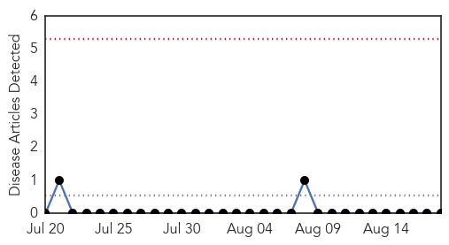
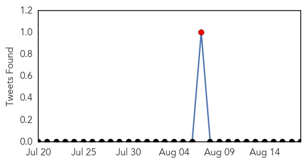

Yellow Fever
30-Day Web Trend
0 alerts, 0 warnings

30-Day Twitter Trend
0 alerts, 0 warnings

Article Locations

Article Confidences

Top Articles:
-
No articles found for Aug 18, 2015
Top Tweets:
-
No tweets found for Aug 18, 2015
MERS
30-Day Web Trend
1 alerts, 0 warnings
30-Day Twitter Trend
0 alerts, 0 warnings

Article Locations

Article Confidences

Top Articles:
Top Tweets:
- 0.698
- AFD Blog `@WHO MERS Update – Saudi Arabia – August 18th' MERS-Cov http://t.co/uIRUaMME37
- 0.667
- AFD Blog `Saudi MOH: 10 Additional MERS Cases In Riyadh' MERS-CoV http://t.co/T3Et1zkroY
- 0.560
- AFD blog `Annals : Needed - An Orchestrated Scientific Response To MERS' MERS-CoV http://t.co/ySirf0dfnD